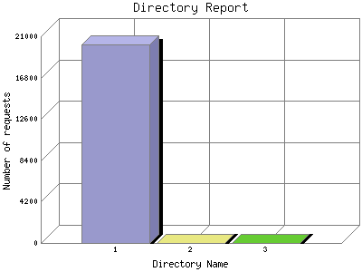

The Directory Report analyzes accesses to this web site's directories. This information can be useful in determining the most requested areas.
This report shows results with at least 0.010000 percent of the total bytes. This report is sorted by amount of bytes transferred.

| Directory Name | Number of requests | Percentage of the bytes | |
|---|---|---|---|
| 1. | www.hollyfitzgerald.com/ | 20,162 | 99.97% |
| 2. | hollyfitzgerald.com/ | 3 | 0.2% |
| 3. | www.HOLLYFITZGERALD.COM/ | 1 | 0.1% |
This report was generated on July 19, 2006 03:35.
Report time frame July 12, 2006 05:31 to July 18, 2006 23:50.
| Web statistics report produced by: | |
| analog 5.1 | Report Magic for Analog 2.10 |